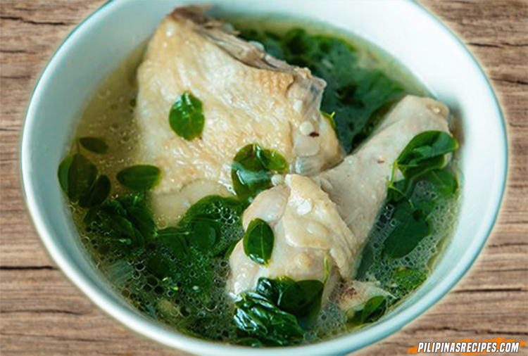

Home
Tinolang Manok

Description
This classic Filipino dish would introduce you best to the world of Filipino dishes.
Ingredients
- Meat: 1/2 kilo of chicken
- Aromatics:
- 1 sliced onion
- 2 cloves of garlic, crushed
- Black pepper
- Vegetables:
- Tanglad
- Malunggay leaves
- 1 sliced Sayote
- Sili leaves
- Others:
- 1 chicken Knorr cube
- 5 cups of water
Steps
- Gather/Prepare all ingredients.
- Saute garlic, onion, and finally put the chicken. Season with black pepper.
- Add 2 cups of water, chicken knorr cubes, and tanglad. Let it simmer. Stir occassionally.
- Put the rest of the vegetables and add more water to taste. Cook until vegetables are soft.